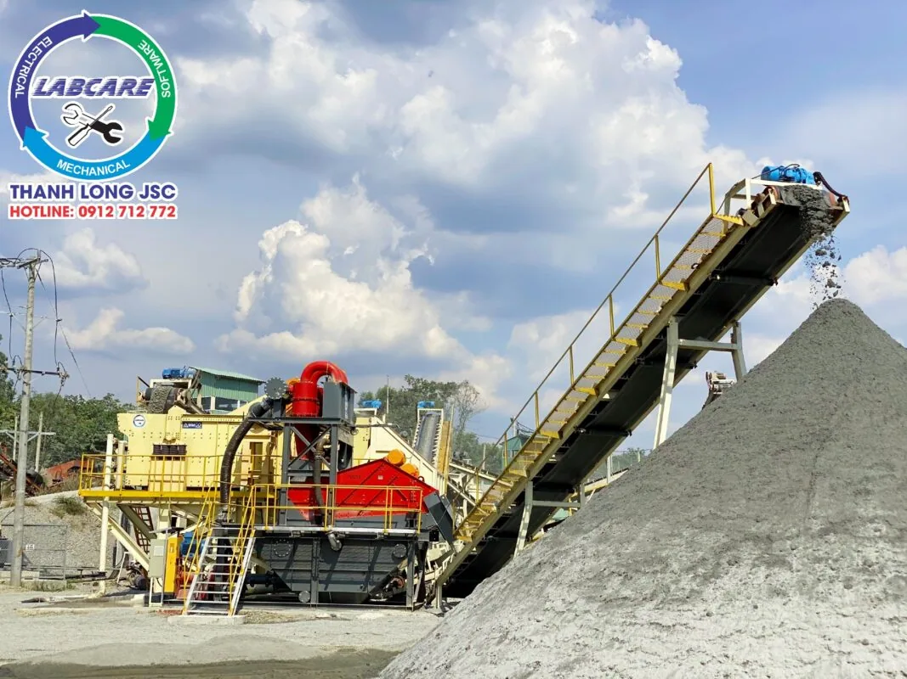
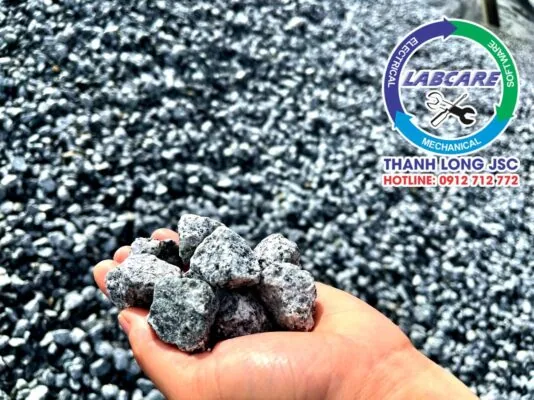
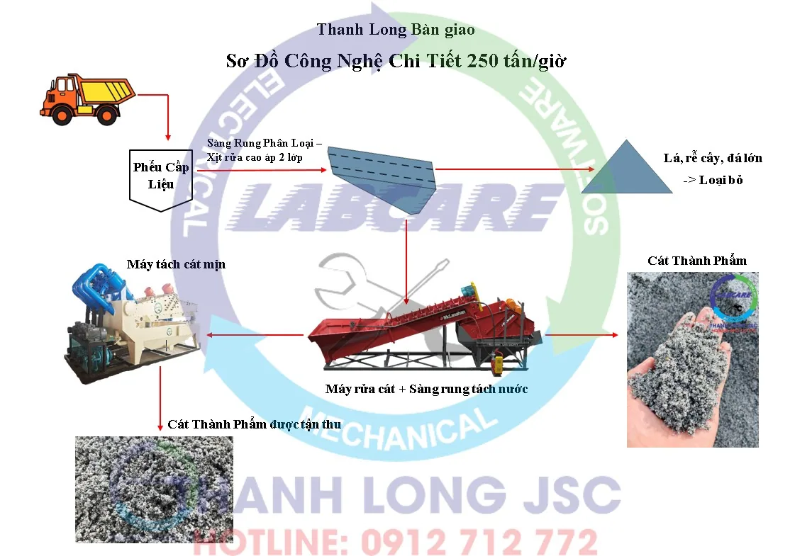
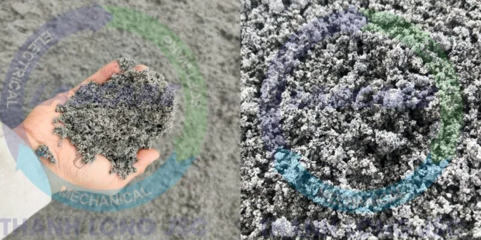

Như chúng ta đã biết, Bình Phước đang là Tỉnh thiếu cát trầm trọng. Cần tìm những nguyên liệu có sẵn để sản xuất cát nhân tạo. Gấp rút cung ứng cho thị trường vật liệu xây dựng, kịp tiến độ các dự án xây dựng trọng điểm nói riêng và ngành xây dựng nói chung. Nhận thấy được tiềm năng sau khi đã đầu tư 07 dây chuyền sản xuất cát, Công Ty TNHH Xây Dựng Công Trình Hùng Vương triển khai thêm hệ nghiền đá thứ 8 – trạm nghiền đá 0x4 và rửa cát tiêu chuẩn tại Bình Phước.
Yêu cầu từ phía công ty đưa ra cho trạm nghiền đá 0x4 và rửa cát tiêu chuẩn
- Cam kết công suất đầu vào 250 tấn/giờ
- Sản phẩm đầu ra: Chính phẩm cát nghiền phải đạt chất lượng cao, kích thước module yêu cầu, đáp ứng tiêu chuẩn TCVN 9205 : 2012
- Bảo vệ môi trường: Tỷ lệ thu hồi cát mịn sau máy rửa cát đạt 95%
- Tiết kiệm điện năng và vật tư tiêu hao
- Trạm nghiền phải đồng bộ thiết bị nhập khẩu, dễ dàng cho người vận hành. Điều chỉnh module theo đơn hàng, bảo trì bảo dưỡng thuận tiện
- Thời gian lắp đặt 30-50 ngày
- Thời gian cao nhất.

Yêu cầu đưa ra nằm trong tầm tay của Máy nghiền đá Thanh Long nhưng vướng một “cái khó”
Máy nghiền đá Thanh Long đã lắp hơn 48 dây chuyền nghiền đá, sản xuất cát nhân tạo trên toàn Việt Nam. Có rất nhiều kinh nghiệm từ những dây chuyền nghiền đá, sản xuất cát nhân tạo. Với yêu cầu trên, Thanh Long tiến hành lên phương án phù hợp và đặt hàng nhà máy để kịp tiến độ sản xuất.
Một “cái khó” cho Máy nghiền đá Thanh Long. Chỉ kịp trình bày phương án lắp đặt, lựa chọn thiết bị. Nhất là giá cả các lãnh đạo tin tưởng và giao luôn trọng trách cho Thanh Long.
Thanh Long giải quyết yêu cầu trạm thứ 8 nghiền đá 0x4 và rửa cát tiêu chuẩn tại Bình Phước
– Đá Granite đầu vào ~<40mm được xe tải đổ vào phễu cấp liệu, và chuyển vào phễu chờ. Máy cấp liệu rung có nhiệm vụ cấp đá vào cho máy nghiền cát, công đoạn này rất quan trọng. Vì nó sẽ quyết định độ thoi dẹt, chất lượng sản phẩm module cát. Sản phẩm sau máy nghiền cát được băng tải dưới để chuyển lên sàng rung phân loại hiệu suất cao, nhằm mục đích phân loại kích thước hạt. Sản phẩm có kích thước trên 05mm, sẽ được hồi lại vào phễu cấp liệu để máy nghiền cát nghiền lại.

– Sản phẩm từ 0-5mm sẽ được đưa vào máy rửa cát McLanahan để tách hạt bụi, làm sạch và đưa ra băng tải thành phẩm. Công đoạn sẽ làm cho các sản phẩm được sạch và đảm bảo tiêu chuẩn hơn cho cấp phối bê tông tươi.
– Yêu cầu trên có đưa ra: Bảo vệ môi trường: Tỷ lệ thu hồi cát mịn sau máy rửa cát đạt 95%.
– Nước rửa cát của máy rửa cát McLanahan sẽ được cấp lên máy tách cát mịn. Các thành phẩm có kích thước từ 0.075-3mm sẽ được thu lại tới 95%. Điều này giải quyết được việc tích tụ bể lắng, Bảo vệ môi trường. Cũng như đem lại thêm doanh thu từ nguồn sản phẩm đầu ra cho Khách hàng.
Quan trọng nhất vẫn là Hệ thống bảo hành và chăm sóc SAU bán hàng
Hiện nay, có rất nhiều nhà cung cấp máy nghiền đá và máy nghiền cát tự phát, kém chất lượng, … Đều “không nhận trách nhiệm” sau khi đã lắp đặt và ký nghiệm thu xong. Chẳng hạn như ở:. BR-VT, Bình Phước, Bình Dương, Kiên Giang, An Giang, Phía Miền Trung và Miền Bắc thì rất nhiều không kể hết.
Bàn giao trạm thứ 8 nghiền đá 0x4 và rửa cát tiêu chuẩn tại Bình Phước
– Với Thanh Long, trong suốt vòng đời hoạt động của thiết bị. Các kỹ sư có kinh nghiệm sẽ thường xuyên ghé thăm và kiểm tra theo định kỳ, bảo đảm máy luôn hoạt động theo đúng các tiêu chí về kỹ thuật.
– Kho vật tư có sẵn tại các Tỉnh Việt Nam.
– Đào tạo nhân viên vận hành, bảo trì và bảo dưỡng máy để giúp người vận hành hiểu rõ cũng như thao tác đạt hiệu quả cao nhất trước khi bàn giao dây chuyền cho khách hàng.
– Đội ngũ kỹ sư dày dặn kinh nghiệm sẵn sàng hỗ trợ khách hàng 24/7 qua điện thoại, video call. Sẽ có mặt kịp thời khi có sự cố nghiêm trọng, nhưng sự cố nghiêm trọng là rất hiếm.
Các thiết bị quan trọng trong trạm thứ 8 nghiền đá 0x4 và rửa cát tiêu chuẩn tại Bình Phước
Sàng Rung Phân Loại – Xịt rửa cao áp 2 lớp – Lọc bỏ tạp chất & Phân loại kích thước hạt, biên độ rung phủ toàn bộ mặt sàng.
Máy rửa cát – Sàng rung tách nước McLanahan – tùy chỉnh kích thước yêu cầu
Máy tách cát mịn – thu hồi 95% cát mịn từ nước rửa cát
Sơ Đồ Công Nghệ Chi Tiết trạm thứ 8 nghiền đá 0x4 và rửa cát tiêu chuẩn 250 tấn/giờ

Các sản phẩm thu được sau Trạm nghiền đá 0x4 & rửa cát tiêu chuẩn 250 tấn/giờ

Báo giá nhanh nhất xin liên hệ (miễn phí): 0912.712.772
Thanh Long JSC chuyên cung cấp :
- Trạm nghiền cát/đá: Máy kẹp hàm, máy nghiền côn, sàng rung phân loại, máy nghiền cát, trạm nghiền đá di động, …
- Công nghệ rửa/tách: Máy rửa cát theo module, sàng rung tách nước, máy tách cát mịn, máy thu hồi cát mịn,..
- Thiết bị phụ tùng, vật tư: Dao nghiền, lưới sàng, má kẹp, nón côn,...
Kênh video Youtube: Thế giới máy nghiền đá Thanh Long JSC
Website: https://thegioimaynghienda.com
#bn